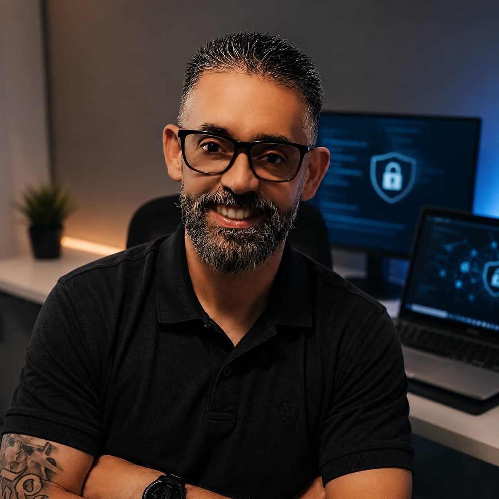

Projetando, implantando e fortalecendo soluções de Cybersecurity para ambientes corporativos, governamentais, financeiros e industriais de alta criticidade.
Profissional com mais de 20 anos de experiência em Cybersecurity, atuando na liderança técnica e consultiva de projetos estratégicos para organizações de grande porte e ambientes de missão crítica. Ao longo da carreira, contribuiu para a evolução da maturidade de segurança de instituições dos setores governamental, financeiro, industrial e corporativo, participando de iniciativas de alta relevância e impacto nacional.
Destaca-se pela capacidade de transformar desafios complexos em soluções sustentáveis, integrando visão de negócio, gestão de riscos e excelência operacional. Sua trajetória é marcada pelo compromisso com a inovação, a proteção de ativos estratégicos e o desenvolvimento contínuo de pessoas e organizações.
Atuação em ambientes corporativos e governamentais de grande porte, conduzindo iniciativas de Gestão de Vulnerabilidades, Cyber Defense e Application Security. Responsável pelo fortalecimento contínuo da postura de segurança dos clientes, apoiando operações de SOC, processos de resposta a incidentes e estratégias de mitigação de riscos cibernéticos.
Atuação como consultor especializado em projetos estratégicos de Cybersecurity, Arquitetura de Segurança e Segurança de Infraestrutura para grandes organizações. Participação no planejamento, implantação e evolução de soluções de proteção, contribuindo para o fortalecimento dos controles de segurança e da maturidade cibernética dos ambientes.
Atuação em ambiente governamental de missão crítica, desenvolvendo e sustentando soluções de segurança de infraestrutura, gestão de vulnerabilidades e proteção de aplicações. Participação em projetos estratégicos voltados ao fortalecimento dos controles técnicos e à evolução da resiliência operacional do ambiente.
Atuação em ambiente financeiro de grande porte, apoiando iniciativas de segurança da informação, infraestrutura e conformidade regulatória. Participação em projetos de fortalecimento dos controles de segurança, proteção da infraestrutura corporativa e adequação às melhores práticas do setor.
Atuação em projetos corporativos de Cybersecurity e Segurança de Infraestrutura, envolvendo planejamento, implantação e evolução de soluções de segurança para diferentes segmentos de mercado. Contribuição para projetos estratégicos de arquitetura de segurança, proteção de perímetro e gestão de acessos.
Atuação em ambiente industrial de alta disponibilidade, desenvolvendo atividades relacionadas à infraestrutura, redes e segurança da informação. Responsável pela administração e evolução do ambiente tecnológico, contribuindo para a estabilidade operacional e a proteção dos ativos corporativos.
Atuação em projetos de redes, infraestrutura e segurança da informação, prestando suporte especializado e participando da implantação de soluções para ambientes corporativos críticos. Contribuiu para a evolução tecnológica dos clientes por meio de projetos de segurança de perímetro, conectividade e infraestrutura de redes.